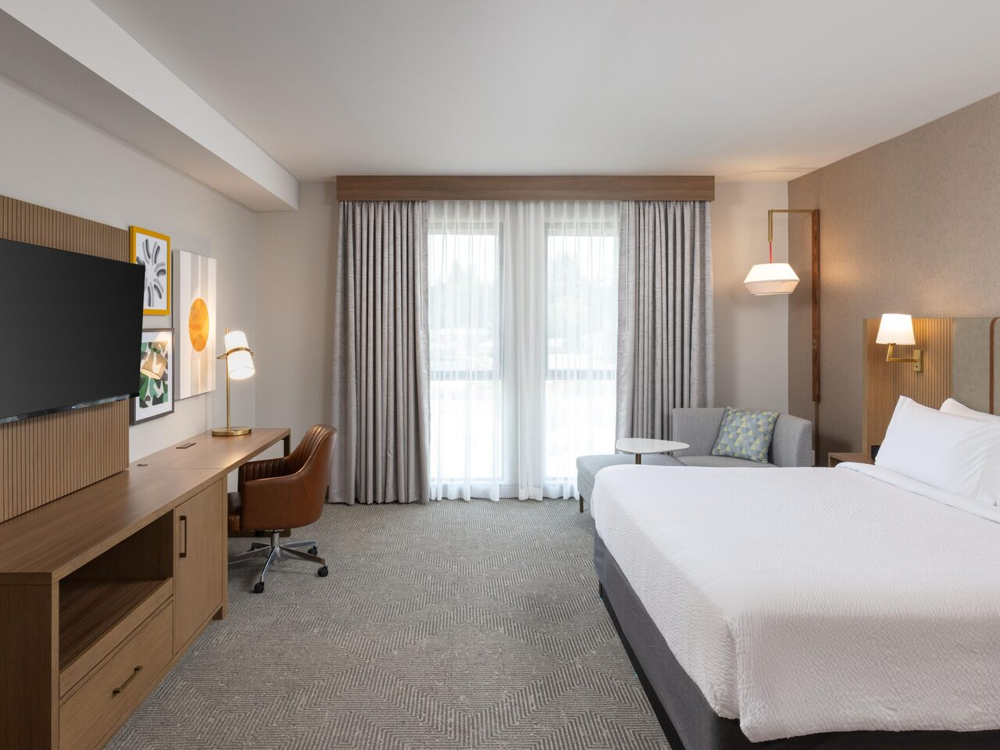

Getty、Beverly Hills、Griffithを残し、108ドルの荷物配送を避けるためスーツケース1個はGriffith前にEast Hollywoodの荷物預かりサービス Bounceへ預けます。保留盖蒂中心、比佛利山和格里菲斯；为避免支付108美元行李配送费，一个行李箱在前往格里菲斯前寄存在东好莱坞的行李寄存服务 Bounce。
予約画面：10/1 北京 12:00発 → ロサンゼルス 10/1 09:20着。预订页面：10/1 北京12:00出发 → 洛杉矶10/1 09:20抵达。
入国審査・荷物受取・配車場所への移動を含む想定です。10:40は順調な場合だけの早着目安です。时间包含入境、取行李和前往网约车上车点；10:40只作为一切顺利时的早到参考。
入国審査・荷物受取・配車場所への移動を開始。
空港を出る時間帯。Getty到着は12:00前後を想定。基本はアプリ配車のUber / Lyft、シャトルは明確に安く待ち時間が短い場合だけ。
時間指定予約、建築・景色・Central Garden・主要展示1–2か所・館内昼食。入口でスーツケースを預ける。
荷物を回収してUber / Lyft。
Rodeo Drive / Pink Wallへは別移動しない。店内が狭ければ交代で入る。
1160 N Vermont Ave付近のホテル型Bounceへスーツケース1個を預ける。
往路はUber / Lyft。理想17:00–17:15、遅くとも17:30。
Hollywood Sign、市街景色、外観、短時間の館内展示、日没・夜景。プラネタリウムは今回は入れない。
帰りは時間制約が緩いためDASHを優先。山麓から徒歩または短距離配車。
営業時間・受取条件は予約時と当日に再確認。
道路状況込みの到着見込み。Holiday Inn & Suites Monterey Park へ向かう。
Beverly Hills: ALO + Erewhon
アパレル店ALOで服を確認し、食品店Erewhonでスムージーまたは飲み物。周辺街歩きは移動中だけ。在服装店ALO看衣服，在食品店Erewhon买冰沙或饮料；周边街景只在两店之间顺路看。
宿泊 住宿

Holiday Inn & Suites Monterey Park – Los Angeles by IHG
10/1–10/2、Monterey Park、CNY 1,049、指定期限までは無料キャンセル。税・手数料・予約番号・住所は未確認です。10/1–10/2，Monterey Park，1,049元，可在指定期限前免费取消。税费、手续费、预订编号和地址尚未确认。
小計：宿泊 CNY 1,049 ＋ 当日の交通・荷物預かり・食事 USD 213–335（概算）。航空券・夕食・買い物・追加税等は未計上。小计：住宿 CNY 1,049 ＋ 当天交通、行李寄存与餐饮 USD 213–335（估算）。未计机票、晚餐、购物及额外税费。